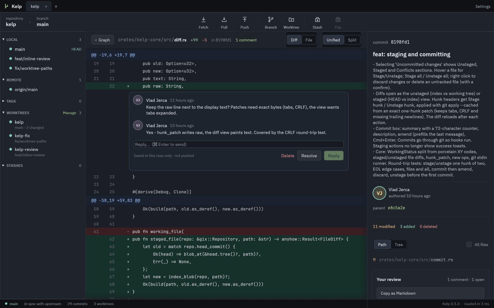
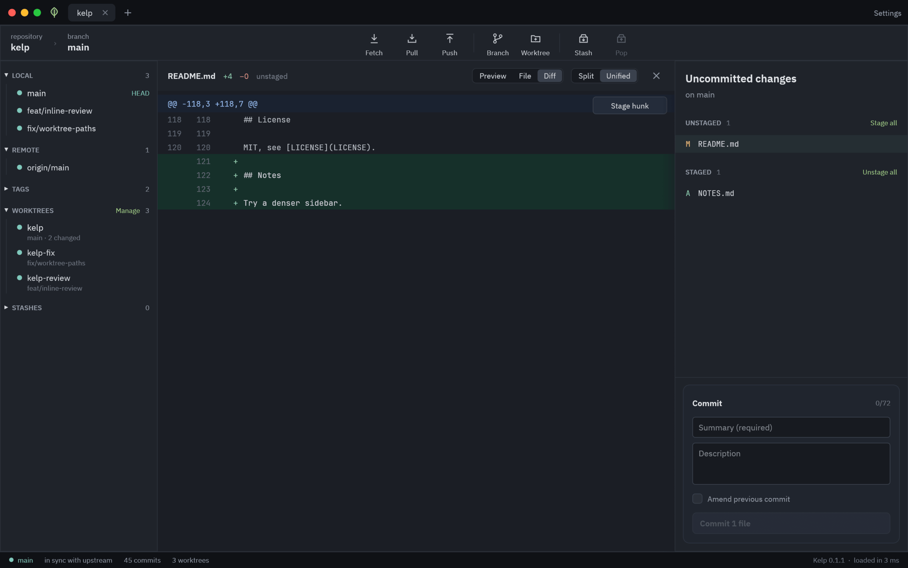
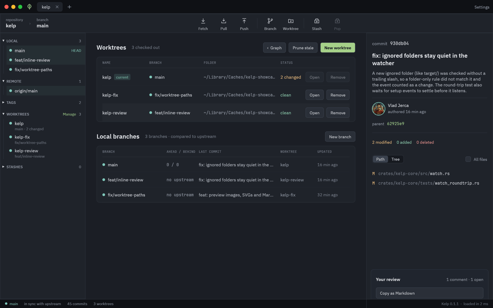

Kelp is a fast, native git client for macOS. A commit graph you can read at a glance, real avatars, staging, worktrees and review comments. No Electron, and 0% CPU when you're not using it.
Kelp covers the daily loop - read history, branch, stage, commit, review - and stays out of the way the rest of the time.
A graph that reads like a map
Straight lanes, round corners, rows tinted in their branch color. Hover to trace a branch, drag a label to merge or rebase, hide what you don't need.
Real faces
GitHub avatars first, then Gravatar, then tidy generated initials. Remote branches wear their GitHub org or owner avatar. Cached, fetched only for what's on screen.
Stage lines, not just files
Stage, unstage or discard a hunk or single lines, pick several files at once, and stash just the ones you want. Word-level highlights show what changed.
Review inline
Comment on any line of a diff, or flip to a rendered preview of images, SVGs and Markdown. Threads follow their line, never get pushed, and copy out as Markdown.
Worktrees, first class
See every worktree, its branch and what's changed. Create one from any branch or commit and open it in a new tab.
Branches in two clicks
Rename in place with F2, edit any commit message, cherry-pick, revert, reset, tag and push. Pushes set their upstream and offer a safe force when rejected.
Everything one keystroke away
Cmd+K finds any action, branch, commit or file. Filter the graph by author or path, compare any two commits, and blame any line.
At home on your Mac
Light and dark follow macOS, the icon turns to glass with your Dock, every action works from the keyboard, and Homebrew keeps it up to date.
Always current
Commit from the terminal or let a teammate push: the graph updates on its own. Pull requests and CI status from GitHub sit right on your branches.
Undo anything
Cmd+Z takes back a commit, rebase, reset, merge or discard, and the reflog finds whatever still looks lost. Kelp refuses rather than lose work.
Interactive rebase, no editor
Drag commits to reorder them, then pick, reword, squash, fixup or drop. Messages are edited right in the list.
Conflicts, side by side
Ours and theirs next to each other with Use ours, theirs or both per conflict, a live result, and Continue or Abort in one place.
Review code where you read it.
Hover a line, press +, write. Replies, resolve, and a review you can paste straight into a pull request.
Unified or split diffs, or the whole file
Comments stay in .git/kelp, never pushed
Anchored to the code, not a line number

Stage exactly what you mean.
Pick files or single hunks, write the message, press Cmd+Enter. Commits go through git, so your hooks and signing just work.
Stage or unstage hunks, even with CRLF or no trailing newline
Amend with the last message filled in
Discard with a confirm, never by accident

All your worktrees, one glance.
Which branch lives where, what's changed, what's ahead or behind. Open any of them in a new tab or a terminal.
New worktree from any branch or commit
Remove and prune without the flags
Tabs remember where you left off

Speed
Fast is a feature. So is quiet.
Kelp reads history with gitoxide, lays out the graph in one pass, and draws only the rows you can see. When nothing is happening, it does nothing.
~150 msto open git/git's 86,000 commits
<1 msto draw a frame while scrolling
0%CPU when idle
14 msto lay out a million commits
Measured on an Apple silicon Mac, release build. Full numbers in the ledger.
Install
Three steps. The last one is optional.
01
Install
Puts Kelp in /Applications and the kelp command on your PATH.
$ brew install hobo-ware/tap/kelp
02
Open a repo
From the app, or straight from a terminal. Kelp reopens your tabs next time.
$ kelp ~/code/my-repo
03
Forget about updates
New releases install in the background. You'll see a restart button when one is ready.
$ brew upgrade kelp # if you like doing it yourself